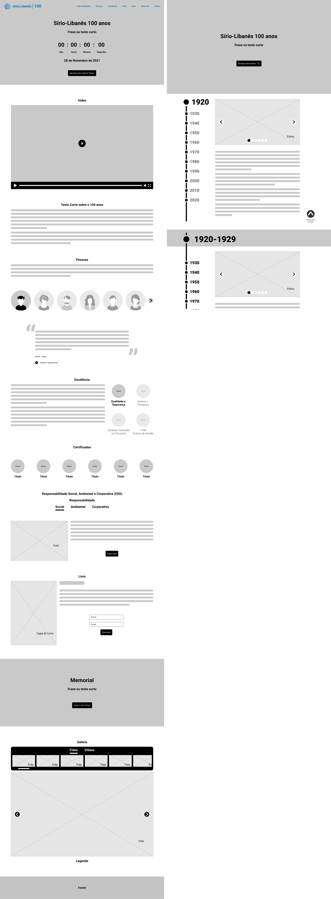

Pesquisa Inicial
A partir das informações recebidas, iniciamos uma pesquisa visando compreender melhor o cenário. Fizemos um benchmarking considerando os principais concorrentes do mercado e também criamos uma jornada do usuário explorando os percursos até o momento final, o cadastro no programa de residência.
Solução
No hero, sugerimos uma foto de um profissional da área de saúde como imagem de fundo, uma frase inspiradora e uma breve descrição destacando os diferenciais logo abaixo da frase.
Na seção seguinte, decidimos subir com os diferenciais pois identificamos que o público que está em busca de programa de residências, normalmente prefere hospitais públicos por acharem que vão ter contato com mais casos. No Sírio o programa de residência é feito em partes no hospital público do Grajaú, e isso é importante ser exposto para que o usuário bata o olho e veja esse diferencial.
Na seção Nossos Programas, utilizamos um carrossel organizado em ordem alfabética, onde cada curso possui um card com seu nome, duração, número de vagas e uma capa.
Na seção Cronograma, fizemos as etapas com suas respectivas datas para que o usuário veja como funciona o processo.
A seção de depoimentos dos ex-alunos e a próxima sobre o diferencial do Sírio, ajudam no processo de conversão. Os depoimentos visam humanizar e validar expectativas e os diferenciais evidenciam como ter a instituição no currículo é relevante.
As próximas seções são simples, a seção de podcasts possui um player do spotify com o último episódio e links para outras plataformas, a de eventos com as datas e botão para inscrição, a próxima tem a função de ser uma chamada para a inscrição, a de FAQ como um espaço destinado a compilar as principais dúvidas sobre o programa e foi organizada com accordions. A última seção é a com formulário com 4 campos obrigatórios e um link que redireciona para o Whatsapp.
Proposta final
A tela da esquerda é a página inicial. A tela superior direita é a linha do tempo e na tela inferior direita como seria o funcionamento do scroll na página da linha do tempo.
